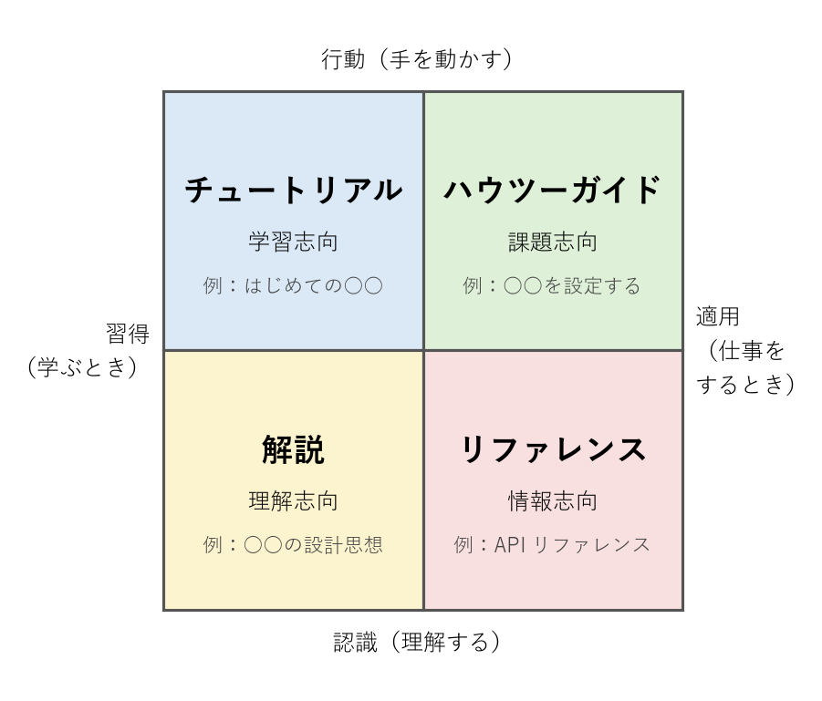

第 2 章 書く前の準備
よい技術文書を書けるかどうかは、書き始める前の準備でほぼ決まる。本章では、読者を定める、目的を定める、文書の種類を選ぶ、情報を集めるという 4 段階の準備を説明する。
読者を定める
技術文書は特定の読者のために書く。読者が決まらなければ、何をどこまで説明するかも決まらない。読者を定めるときは、次の 3 点を考える。
観点 |
問い |
例 |
|---|---|---|
前提知識 |
読者は何を知っていて、何を知らないか。 |
Python は書けるが、社内のデプロイ基盤は使ったことがない。 |
読む目的 |
読者は文書を読んで何をしたいか。 |
新しいサービスを手元の環境で動かしたい。 |
読む状況 |
読者はどのような状況で文書を読むか。 |
障害対応の最中に、急いで復旧手順を探している。 |
読者を「エンジニア全般」のように広く設定すると、説明の水準が定まらない。前提知識の多い読者には冗長に、少ない読者には不親切になり、結局どちらの読者にも合わない文書になる。そこで、実在する同僚のような具体的な一人の人物を思い浮かべ、その人に向けて書くとよい。このように想定した読者像をペルソナと呼ぶ。
前提知識が大きく異なる複数の読者がいる場合は、読者ごとに文書を分けるか、読者ごとに読むべき章を明示する。
定めた読者は、文書の冒頭に明記する。読者は自分が対象に含まれるかどうかをすぐに判断でき、書き手も執筆中に読者を見失わずに済む。
1## 対象読者
2
3本手順書は、Linux の基本的なコマンド操作ができる運用担当者を対象とする。
4PostgreSQL の操作経験は前提としない。
目的を一文で書く
次に、文書の目的を「この文書を読んだ読者は、○○できるようになる」という形の一文で書く。目的は「何について書くか」ではなく、「読者が何をできるようになるか」で表す。
悪い例 |
良い例 |
|---|---|
認証基盤について説明する。 |
この文書を読んだ開発者は、自分のサービスに社内認証基盤を使ったログイン機能を組み込めるようになる。 |
悪い例は話題を示しているだけで、どこまで書けば完成なのかが分からない。良い例であれば、ログイン機能を組み込むのに必要な情報は書き、必要のない情報は省くという判断ができる。
目的を一文で書けない場合は、書き手自身が目的を理解していないか、一つの文書に複数の目的を詰め込もうとしている可能性が高い。後者の場合は文書を分割する（「第 3 章 構成を組み立てる」を参照）。
文書の種類を選ぶ
読者と目的が決まったら、文書の種類を選ぶ。種類を選ぶときの指針として、Daniele Procida が提唱した Diátaxis という枠組みが広く知られている。Diátaxis は、技術文書を読者の必要に応じて 4 種類に分類する（図 2）。


図 2 Diátaxis による技術文書の 4 分類
縦軸は、読者が手を動かしたいのか（行動）、知識を得たいのか（認識）を表す。横軸は、読者が学んでいる最中なのか（習得）、実際の仕事に取り組んでいる最中なのか（適用）を表す。
種類 |
読者の状況 |
書き方の要点 |
|---|---|---|
チュートリアル |
初心者が、手を動かしながら学びたい。 |
決まった手順で必ず成功する体験を提供する。選択肢や詳細な説明は最小限にする。 |
ハウツーガイド |
基本を知っている読者が、特定の課題を解決したい。 |
課題の解決に必要な手順だけを示す。基礎の説明は省く。 |
リファレンス |
読者が、仕様を正確に調べたい。 |
網羅的かつ正確に、一定の形式で記述する。説明や意見を混ぜない。 |
解説 |
読者が、背景や設計の意図を理解したい。 |
「なぜ」に答える。手順や仕様の列挙ではなく、考え方と経緯を説明する。 |
よくある失敗は、これらの種類を一つの文書に混ぜることである。たとえば、チュートリアルの途中に全オプションの一覧（リファレンス）や設計の経緯（解説）を挟むと、初心者は手順の流れを見失う。種類の異なる内容は別の文書や別の節に分け、リンクで結ぶ。
情報を集め、取捨選択する
書く内容は、次のような情報源から集める。
ソースコード、設定ファイル、コミット履歴
既存の文書、Issue、チャットの記録
開発者や運用担当者への聞き取り
書き手自身による操作や検証
手順書やチュートリアルを書くときは、必ず書き手自身が手順どおりに操作して、結果を確認する。記憶や推測だけで書いた手順には、省略された前提や誤ったコマンドが紛れ込みやすい。
集めた情報をすべて書く必要はない。取捨選択の基準は、その情報が読者の目的の達成に必要かどうかである。書き手が苦労して調べた経緯であっても、読者の目的に関係がなければ書かない。ただし、設計の判断に至った経緯は、将来の保守担当者にとって重要な情報になる。この種の情報は設計書の「検討した代替案」の節に残す（「第 7 章 文書の種類別の書き方」を参照）。
準備の結果は、執筆を始める前に短いメモにまとめておくとよい。
1読者：入社 1 年目の開発者。Python は書けるが、社内のデプロイ基盤は未経験。
2目的：この文書を読んだ開発者は、自分のサービスを検証環境にデプロイできるようになる。
3種類：ハウツーガイド
4範囲：検証環境へのデプロイまで。本番環境へのデプロイは別の文書で扱う。